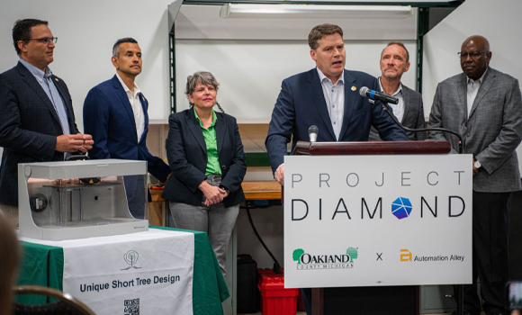

News & Insights

distributed 3D printing
One line of technical scope in the 15 October announcement is skipped by almost every piece of coverage: Phase I is to produce the candidate parts using validated processes. That line is where the difficulty actually sits. Encrypting a set of manufacturing instructions and sending it out is a security problem. Getting factories scattered across the country, none of them inside the same quality system, to make the same acceptable part from the same parameters is a manufacturing problem — and no cipher solves that one.
The facts are straightforward. Automation Alley, Michigan's Industry 4.0 knowledge center, was awarded a Phase I Task Order under the Industrial Base Analysis and Sustainment (IBAS) program, worth $7.5 million with a Base and Option — Automation Alley is the awardee — administered through the National Center for Defense Manufacturing and Machining (NCDMM) IDIQ. NCDMM is the prime contractor; Markforged and Fraunhofer USA are the executing technology and research partners. What follows is not about who received the funding, but about a threshold the technical scope exposes — one that the additive manufacturing conversation across Greater China has barely raised.
The word fleet
Three hundred machines do not add up to a manufacturing network
Project DIAMOnD has been placing printers with small and mid-sized manufacturers across Michigan since 2020, three hundred of them to date; Markforged supplied the first wave. On headcount alone, the hardware for a distributed manufacturing network was in place six years ago.
But what lets those three hundred sites take on a defense order together is not their number. It is the answer to a narrow question: send one set of manufacturing instructions to any machine in the network, and do you get the same part out. Not a part that looks the same — one whose dimensions and mechanical properties land inside the same acceptable band despite differences in material lot, ambient conditions, operator and post-processing, with evidence left behind for every unit.
This is hard enough inside one factory; across a distributed network it is a different order of magnitude. Phase I writes it into the deliverables: identify and validate candidate polymer and metallic weapon system components, then produce them using validated processes. Validation first, production second — the sequence is itself the specification.

- Same machine model, same material specification, same software chain
- Process parameters validated at source and version-controlled
- Adding a site means copying an existing configuration
- Quality records share one schema and can be compared in aggregate
- Each site buys whatever brand and model its budget cycle allowed
- Parameters tuned locally; the variance lives with the operator
- Adding a site means adding another combination to qualify
- Records differ in format and have to be reconciled by hand
The cost of qualification
Qualification cost is not additive, it is multiplicative
The volume of qualification work is set by how many machine-material-part combinations have to be qualified. In a single-fleet network, a part qualified once in one material carries that status to other sites along with the configuration. In a mixed estate, every additional machine type multiplies the combination count. This is why the number of machines a programme owns says almost nothing about whether it can take on an order that demands traceability.
It also explains why Phase I puts a secure encrypted digital workflow architecture and production using validated processes on the same deliverables list, aligned to Cybersecurity Maturity Model Certification (CMMC) and National Institute of Standards and Technology (NIST) cybersecurity standards. The first governs whether the file leaks. The second governs whether the part can be made and proven. A network exists only when both hold; with one missing, what remains is a set of machines with network access.
Not a procurement preference
The advantage of one fleet shows up in the qualification ledger, not the datasheet
Converging a fleet onto one platform intuitively feels like lock-in. Where quality evidence has to be delivered, the arithmetic runs the other way: qualifying once and letting the network inherit it, against qualifying at every site, differs by the schedule and auditability of the whole programme.
It is also why equipment suppliers on programmes like this are rarely selected on single-machine specifications. No Phase I deliverable concerns the maximum part size of any one printer. The deliverables are the secure end-to-end transfer of Smart Product Recipes (SPRs) and the digital quality assurance instructions that accompany each part produced. The equipment has one question to answer: can it reproduce the same recipe at a different site.
On the division of labour: Automation Alley leads the design and validation of the secure digital manufacturing environment; Markforged supplies industrial additive manufacturing systems; Fraunhofer USA handles applied research; NCDMM, the prime contractor, also manages America Makes and operates seven locations nationwide. Automation Alley describes the combination as bringing together additive manufacturing technology, cybersecurity and manufacturing process validation.

Greater China and Viet Nam
Turning demonstration sites into capacity is not a question of the next machine
Taiwan, Hong Kong and Viet Nam have each seen additive manufacturing demonstration sites, clusters and defense self-reliance initiatives appear over the past two years. The publicly visible discussion sits mostly on machine counts, build volumes and material options — the fields on a datasheet.
The Phase I list points at a different set of fields. How many qualified processes do your sites share? Move a part to another site and does it need re-qualifying? What format of evidence does each unit leave behind, and who can retrieve it?
None of these require a budget cycle or another purchase to answer. What they decide is whether, when an order requiring traceability arrives, those sites constitute a network or a collection of unrelated machines.
The machines arrived six years ago. What is being validated now is the line between them.
IBAS PHASE I · DESIGN AND VALIDATIONCONCLUSION
Start by counting the processes in your fleet
Do not start with equipment. Take the list of sites you already have and count three numbers: how many machine models, how many material specifications, and whether the same part runs on the same parameters at every site.
If those three numbers add up to well above one, what you have is machines, not yet a network.
Further reading
The event report on this award and the A4 case reports (four pages each, Traditional Chinese and English), all drawn from Automation Alley's announcement of 15 October 2026.

Audit your fleet once
A fleet audit is not a procurement exercise. It is an engineering reconciliation: how many machine models, material specifications, process parameter sets and evidence formats you actually have. The Markforged Greater China and Viet Nam team can work through it with you, starting from the configuration of your existing sites rather than from a datasheet. On-site sessions can be arranged in Taiwan, Hong Kong or Viet Nam.
Contact the Markforged Greater China teamSources and method
- Automation Alley news release: Automation Alley Awarded Contract to Advance Secure Distributed Additive Manufacturing (PR Newswire, 15 October 2026). All contract facts, scope and organisational roles in this article come from this source.
https://www.prnewswire.com/news-releases/automation-alley-awarded-contract-to-advance-secure-distributed-additive-manufacturing-forthe-us-departmentof-war-302909514.html - Automation Alley, Project DIAMOnD programme page: established 2020 under CARES Act funding, 300 printers placed to date.
https://www.automationalley.com/project-diamond - 3Dnatives, Markforged Provides 3D Printers for Project DIAMOnD (January 2021) — the first wave of printers and the programme's scope.
https://www.3dnatives.com/en/markforged-provides-3d-printers-for-project-diamond-140120216/ - Metal AM magazine, Automation Alley to develop secure distributed AM network under $7.5M defence contract (October 2026) — independent trade-press coverage of the award.
https://www.metal-am.com/automation-alley-to-develop-secure-distributed-am-network-under-7-5-million-defence-contract/ - A note on method: fleet-level process qualification and the multiplicative cost of qualification are this article's analytical frame for reading the announced scope; neither phrase appears in the announcement. Observations about Greater China and Viet Nam refer to the emphasis of publicly visible discussion and to no named organisation's procurement.
- A note on naming: the statutory name remains the Department of Defense. Department of War is a secondary title established by executive order in September 2025, with the legislative process incomplete. This article uses the US Army, the operative service, as its subject.
← Back to the media hub · markforged.tw